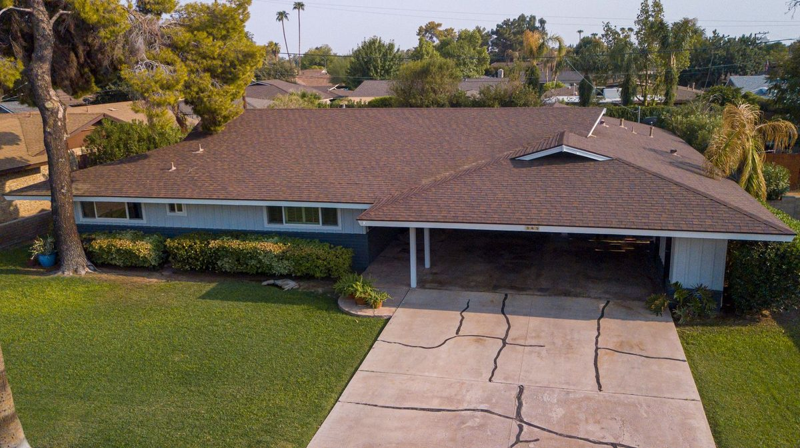
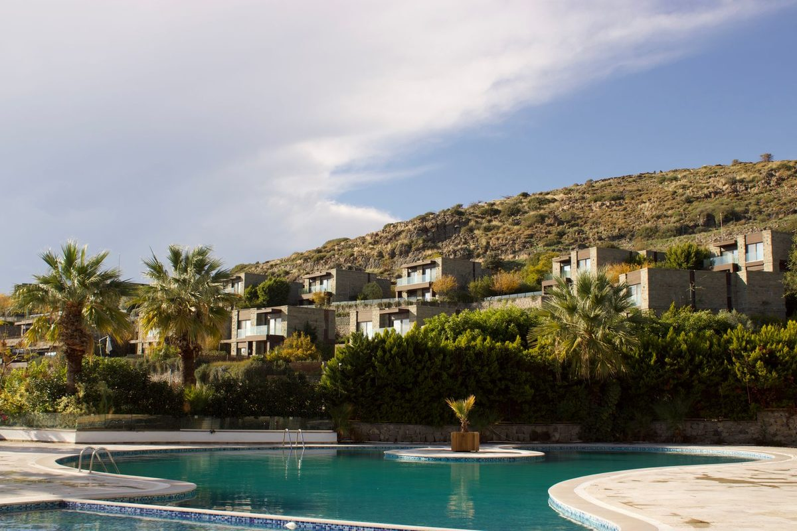
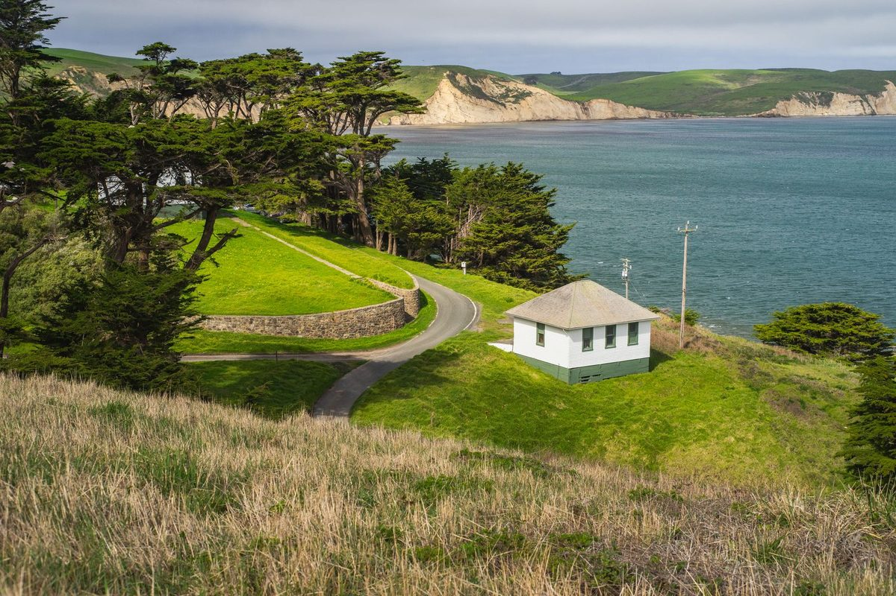
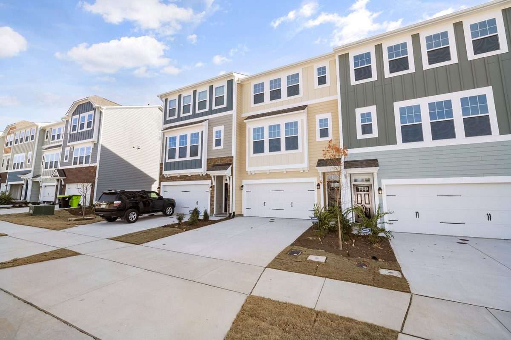

01


Escondido, California
Escondido homes for sale, and a guide to the city where Ryan's office sits on Grand Avenue.
Escondido at a glance
Escondido was incorporated in 1888, and Grand Avenue is still the heart of its historic downtown, where Ryan's office is. In the hills northeast of downtown, the city owns Dixon Lake and the Daley Ranch conservation area.
The town grew out of the Rancho Rincon del Diablo grant, which the Escondido Land and Town Company bought in 1886 and divided into small farms for grapes and citrus. Today Interstate 15 and State Route 78 meet in the city, and the SPRINTER rail line ends at the Escondido Transit Center.
45min
San Diego International Airport
40min
Downtown San Diego
27min
Carlsbad State Beach
34min
Old Town Temecula
Approximate drive times from City Hall without traffic (OSRM routing, checked 2026-10-16)
Grape Day Park
The city's oldest park, where the Grape Day harvest was celebrated from 1908 to 1950.
Old Escondido Historic District
Homes from the 1880s on, from Craftsman bungalows to Victorians, a few blocks south of Grand Avenue.
Dixon Lake
A city lake on La Honda Drive, with fishing, boats and a campground.
Daley Ranch
City conservation land with multipurpose trails, open from dawn to dusk.
Queen Califia's Magical Circle
Niki de Saint Phalle's only American sculpture garden, in Kit Carson Park.
Saved searches
Each card opens a live search of CRMLS listings, updated as they change.

01

02

03

04

Grape Day Park, on North Broadway, is the city's oldest park. Every year from 1908 to 1950 it hosted the Grape Day harvest celebration, which drew visitors from as far away as Los Angeles. It now holds a turn-of-the-century barn and a Santa Fe Railroad depot, along with the Heritage Walk of early buildings run by the Escondido History Center. The small building where Escondido's library began, as a private one in 1894, sits in the park too.
Grand Avenue is the heart of Historic Downtown Escondido, and the downtown business association has brought murals to the alleys along it and to the Escondido Creek Trail. The city also has the California Center for the Arts, Escondido, with a concert hall, a theater and an art museum, and the Escondido Public Library's Pioneer Room is the city's main historical research center.
A few blocks south of Grand Avenue, the Old Escondido Historic District runs from 4th Avenue to 13th Avenue between Escondido Boulevard and Chestnut Street. The city created the district in 1989, and its homes, built from the mid-1880s on, range from small Craftsman bungalows to large Victorians.
Owning one comes with a rule to know before you buy. Every homeowner in the district needs a certificate of appropriateness from the city before changing the outside of the house, and that includes paint, new windows and fences. If your plans for a house depend on exterior work, talk to the city's planning staff before you write the offer.
The city's General Plan sorts Escondido's homes into bands. Large-lot estate homes are typical along Mary Lane and North Broadway and around Felicita Park, and neighborhoods such as Lomas Serenas and Rancho Verde sit on relatively large lots too. Detached single-family homes are characteristic of much of the city, while townhouses and apartments are found near Centre City Parkway at El Norte and along east Grand Avenue.
Mobilehome parks are part of the mix. Under the Mobilehome Rent Control Ordinance, Proposition K, which Escondido voters passed in 1988, a park owner needs approval from the city's Rent Review Board before raising the space rent of an existing resident. Read the city's rent control page before you buy a home in a park.
The city runs two lakes. Dixon Lake, on La Honda Drive, is open year-round for fishing, boating, hiking, picnics and camping. Lake Wohlford, the city's other lake, is open for fishing and boating, and both are stocked with trout and catfish every year.
Daley Ranch, a conservation area the city bought in 1996, begins just north of Dixon Lake, and its multipurpose trails take bikes and horses as well as hikers from dawn to dusk. On Bear Valley Parkway, Kit Carson Park is the city's largest regional park, with a sports center and an outdoor amphitheater. It is also home to Queen Califia's Magical Circle, Niki de Saint Phalle's only American sculpture garden.
Not every home with an Escondido address is inside the city. Unincorporated county land sits in islands among the cities of North County, and the city's own short-term rental page notes that rentals in the unincorporated areas of Escondido follow county rules. Inside the city, renting out a home for 30 days or less has required a short-term rental permit, a transient occupancy tax registration and a business license since July 1, 2025.
Water service is split too. The City of Escondido runs its own water utility, and Rincon del Diablo Municipal Water District serves areas in Escondido, San Marcos and the county. Ask which agency serves the address, and confirm the school for any address with the district.
Day to day
School information is factual and by district. Always confirm a specific address in the district's school finder.
Questions
Escondido Union School District and Escondido Union High School District serve the city. District boundaries do not always follow city limits, so confirm the school for any address with the district.
No. Some homes with an Escondido address sit in unincorporated San Diego County, where county rules apply; the city's short-term rental page, for one, sends rentals in those areas to county regulations. Check the parcel before you rely on a city rule.
The district runs from 4th Avenue to 13th Avenue between Escondido Boulevard and Chestnut Street. Owners need a certificate of appropriateness from the city before changing a home's exterior, including paint, windows and fences.
Yes. MTS Rapid 235 runs between Escondido and downtown San Diego, and the SPRINTER runs west from the Escondido Transit Center to Oceanside, where the COASTER heads south to downtown.
Nearby


Resources
Contact
Ryan's office is on Grand Avenue: call (760) 415-1925 or send a note about the part of Escondido you have in mind.